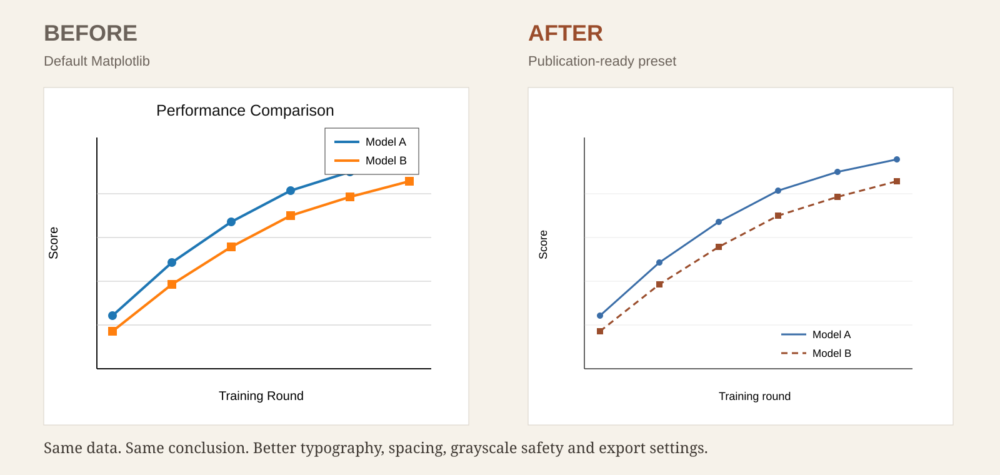

Small research tool · Matplotlib
Make academic figures look publication-ready.
A focused skill for polishing existing Matplotlib figures—typography, spacing, legends, final-column sizing, grayscale safety, and export quality—without changing the science.

What it fixes
Default styling, crowded labels, poor scaling, awkward legends, inconsistent subplot spacing, clipped text and weak export settings.
What it preserves
Numerical values, uncertainty, labels, scientific meaning and statistical interpretation.
Example prompt
Polish this Matplotlib figure for a two-column journal.\nKeep all data and labels unchanged.\nExport PDF, SVG and 600 dpi PNG.